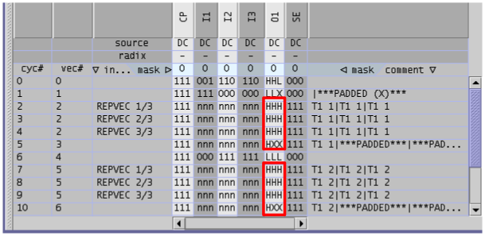

Vector padding for parallel pins in the scan sections
If the ASCII scan setup is converted into a binary multi-port setup, and the original template length TL is not a multiple of the x-mode factor n, the conversion must apply vector padding to the ASCII scan instances. This requires specifying -xpi as a v2b option if at least one scan instance is followed by another (scan or parallel) section.
The padding for the scan parts is analogous to that applied to a standard scan translation (see ASCII Vector Padding for Scan Vectors). But the padding for the parallel parts is different, as follows:
If TL > n, two binary vectors are created, the first from an n-tuple of the state character in the parallel part of the ASCII scan instance, and the second from an n-tuple that is padded with n-r occurrences of a padding character, where r is the remainder of TL/n. The first vector is executed TL'/n-1 times with an RPTV instruction, where TL' is the corrected template length. The second, padded, vector is executed once. If TL < n, only the padded vector will be created, and executed once.
The padding character
The padding character is either the default padding character (see X-Mode ASCII Vector Padding), or it is defined in a padding translation file (see The Padding Translation File), or specified by a SCAN_PAD instruction. The padding translation file overrides the default, and the SCAN_PAD instruction overrides the padding translation file.
Note that the meaning of the SCAN_PAD instruction depends on whether the ASCII scan setup is converted to a scan tool setup or to a multi-port setup. In the latter case, SCAN_PAD only defines the padding character. For the former case, see Creation of the Waveform DC/DC power units for the Parallel Part.
Example
As an example, consider the following ASCII vector file:
FORMAT CP SI SO SE I1 I2 I3 O1; HORIZONTAL_SCAN; SCAN_TYPE STANDARD; R2 sc_par 1 n n 0 0 1 1 H; R3 sc_par 1 n n 0 1 0 0 L; SCAN_TEMPLATE T1 10; SCAN_PORT T1 IN SI; SCAN_PORT T1 OUT SO; SCAN T1 sc_par 1 - - 1 n n n H; PIN SI 10 01 10 01 10; PIN SO XX XX XX XX XX; R3 sc_par 1 n n 0 0 1 1 L; SCAN T1 sc_par 1 - - 1 n n n H; PIN SI ZZ ZZ ZZ ZZ ZZ; PIN SO HL LH HL LH HL;
If this file is translated with an x-mode factor of 3, the template length must be corrected from 10 to 12, and one padding vector must be added at the end of each of the scan instances. In this case the parallel parts of the two binary scan sections will look as follows:

The figure shows the pattern for the parallel port. The principles of the padding can be read off from the column for pin O1. The padding character is 'X', according to the base rule for receive pins (see X-Mode ASCII Vector Padding). Since the last scan section vector of the parallel part differs from the other ones, it cannot be included in the RPTV loop, but must be appended with a GENV instruction. This is reflected in the instruction column.